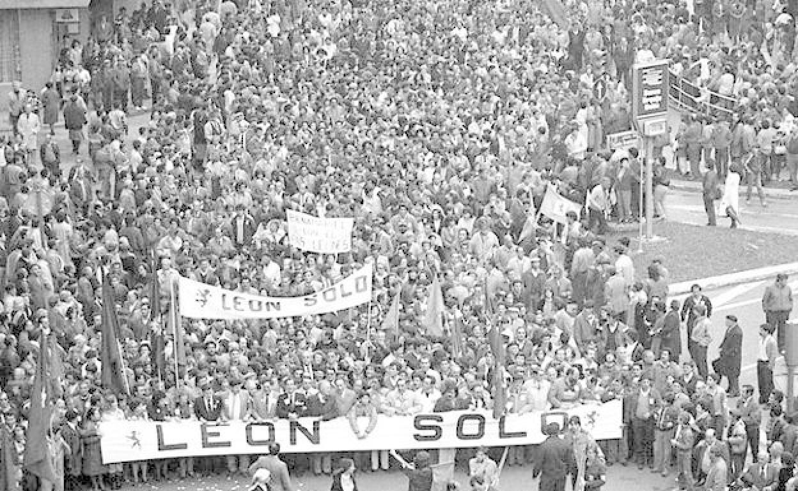
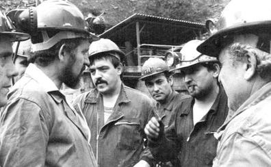

| Etapas | |
|---|---|
| Prehistoria | |
| Edad de los Metales | |
| Edad Antigua | |
| Edad Media | |
| Edad Moderna | |
| Edad Contemporánea | |
| Segunda República, Guerra Civil y franquismo | |
| Estatuto de Autonomía | |
| Reino de Castilla y León |
En junio de 1978, Castilla y León obtuvo el régimen preautonómico (a finales de 1977 lo había obtenido Cataluña) por el Real Decreto Ley 20/1978, de 13 de junio.
En tiempos de la Primera República (1873–1874), los republicanos federales concibieron el proyecto de crear un único estado federado de once provincias en el valle del Duero español, que además hubiera comprendido las provincias de Santander y Logroño.Muy pocos años antes, en 1869, republicanos de las provincias que forman parte de la comunidad autónoma firmaron el Pacto Federal Castellano, en el que ya proyectaban la creación del estado federado de Castilla, pero con las provincias de la actual comunidad castellanoleonesa y las de Cantabria y La Rioja. El fin de la República, a principios de 1874, dio al traste la iniciativa.
En 1921, con motivo del cuarto centenario de la batalla de Villalar, el ayuntamiento de Santander abogó por la creación de una mancomunidad castellanoleonesa de once provincias. Idea que se mantendría en años posteriores.
A finales de 1931 y principios de 1932, desde León, Eugenio Merino elaboró un texto en el que ponía las bases de un regionalismo castellanoleonés. El texto se publicó en el Diario de León.
Durante la II República, sobre todo en 1936, hubo una gran actividad regionalista favorable a una región de once provincias, e incluso se llegaron a elaborar unas bases de estatuto de autonomía. El Diario de León abogó por la formalización de esta iniciativa y la constitución de una región autónoma con estas palabras: «unir en una personalidad a León y Castilla la Vieja en torno a la gran cuenca del Duero, sin caer ahora en rivalidades pueblerinas».Al final la guerra civil acabó con las aspiraciones de la autonomía para la región. El filósofo José Ortega y Gasset recogió dicho esquema en sus publicaciones.
Tras la muerte del dictador Franco, surgieron organizaciones regionalistas, autonomistas y nacionalistas (regionalismo castellano-leonés y nacionalismo castellano) como Alianza Regional de Castilla y León (1975), Instituto Regional de Castilla y León (1976) o PANCAL (1977). Posteriormente tras la extinción de estas formaciones surgió en 1993 Unidad Regionalista de Castilla y León.
Paralelamente surgieron otras de carácter leonesista como Ciudadanos Zamoranos CC.ZZ.(1975), Grupo Regionalista Salmantino GRES(1976) y el Grupo Autonómico Leonés GAL (1978){las tres organizaciones formalizaron el MOVIMIENTO LEONESISTA ML-.-liderados por Francisco Iglesias Carreño, con la estrecha colaboración de Jaime Andrés Rodríguez}. El ML creó, a instancias de Iglesias Carreño, el Consejo General de las Comarcas del País Leonés, y estableció la Fiesta de Las Comarcas en Valorio los terceros domingos de mayo. Desde el ML se crea, como instrumento político, el PARTIDO REGIONALISTA DEL PAÍS LEONÉS PREPAL (1980), que propugnaban la creación de una Comunidad Autónoma Reino Leonés, integrada por las provincias de Salamanca, Zamora y León. El apoyo popular y político que mantuvo la autonomía REINO LEÓN SOLO se concretó en la manifestación, auspiciada por el PREPAL con carácter abierto, de 119.765 ciudadanos de las tres provincias leonesas, el día 4-5-1984.
Tras la entrada en funcionamiento del órgano preautonómico castellanoleonés, a cuya creación contribuyó la Diputación Provincial de León en su acuerdo de 16 de abril de 1980, la misma institución leonesa revocó en 13 de enero de 1983 su primigenio acuerdo, justo cuando el proyecto de Ley Orgánica entraba en el parlamento existencia de acuerdos contradictorios y cuál era el válido fue resuelta por el Tribunal Constitucional en la Sentencia 89/1984 de 28 de septiembre en su fundamento de derecho declara que el sujeto del proceso no está integrado ya, como en su fase de impulsión preliminar, por las Diputaciones y Municipios, sino que es un nuevo órgano que nace porque ya se ha manifestado la voluntad impulsora y que expresa ahora la del territorio en su conjunto; y esa voluntad ya tiene un objeto distinto, el régimen jurídico futuro del territorio que ya ha manifestado su voluntad de constituirse en Comunidad Autónoma mediante actos de iniciativa que ya han agotado sus efectos.
Coincidiendo con aquella sentencia, se produjeron en León diferentes manifestaciones, algunas numerosas, a favor de la opción León solo, que según algunas fuentes congregó a un número cercano a los 90.000 asistentes, siendo esta la mayor concentración celebrada en la ciudad en la Democracia hasta la posterior al 11-M1
En acuerdo adoptado el 31 de julio de 1981 la Diputación Provincial de Segovia decide ejercitar la iniciativa para que Segovia pudiera constituirse en comunidad autónoma uniprovincial, pero en los municipios de la provincia la situación estaba igualada entre los partidarios de la autonomía uniprovincial o con el resto de Castilla y León. El Ayuntamiento de Cuéllar inicialmente se adhirió a esta iniciativa autonómica en acuerdo adoptado por la corporación el 5 de octubre de 1981. Sin embargo otro acuerdo adoptado por la misma corporación con fecha 3 de diciembre del mismo año revocó el anterior y el proceso quedó paralizado a la espera de la tramitación de un recurso interpuesto por la diputación provincial contra este último acuerdo este cambio de opinión del Ayuntamiento de Cuéllar inclinó la balanza en la provincia hacía la autonomía con el resto de Castilla y León, pero fue un acuerdo que llegó fuera de plazo. Finalmente la provincia de Segovia se incorporó a Castilla y León junto con las otras ocho provincias y se dio cobertura legal mediante la Ley Orgánica 5/1983 por «motivos de interés nacional», según prevé el artículo 144 c) de la Constitución Española para aquellas provincias que no hayan ejercido su derecho a tiempo.
Hoy en día, la Fundación Villalar se encarga la realización de actividades culturales sobre el arte, la cultura o las señas de identidad de Castilla y León.
La Comunidad concede cada año, con ocasión de la Fiesta de la Comunidad el 23 de abril, los Premios Castilla y León a los castellanoleoneses destacados en las siguientes áreas: Artes, Valores Humanos, Investigación Científica, Ciencias Sociales, Restauración y Conservación, Medio Ambiente y Deportes.
La Constitución de 1978 marcó el inicio de un proceso descentralizador que concluyó en el actual sistema de las autonomías. El resultado, sin embargo, no fue fruto de una suerte de idea novedosa acordada entre varios políticos. La Constitución necesitó el consenso general y la Ley para la Reforma Política de 1976 facilitó los cambios pertinentes. Sin embargo, un poso ideológico que databa de varias decenas de años estuvo en el trasfondo de esos cambios.
Los precedentes históricos más inmediatos serían los movimientos anticentralistas que se suceden a lo largo de los siglos XIX y XX en nuestro país. Estos movimientos se oponen a una visión de una España centralizada y acompañan al sistema centralista casi desde su origen. Sus influjos federalistas quedan fuera de toda duda y se remontan a los albores del constitucionalismo español, desde los comienzos del siglo XIX. De esta manera, encontramos que las manifestaciones más tempranas del anticentralismo son las ideas foralistas, las carlistas, y las federalistas. El fracaso de la República Federal de 1873 marca el punto álgido en los intentos de implantar fórmulas descentralizadas.
Desde la Ley para la Reforma Política de 1976 hasta la Constitución Española 1978, se genera en España un singular proceso de instauración de regímenes provisionales de autonomía que se conceden por decreto ley a los territorios interesados tras negociaciones con el Gobierno Central. El punto de partida de este proceso es el decreto ley de 29 de septiembre de 1977, por el que se restablece la Generalidad de Cataluña. Tras él, prácticamente todo el territorio del Estado, salvo Madrid, Ceuta y Melilla y Navarra, fue afectado por los regímenes de preautonomía.
En 1977 se celebraron en España las primeras elecciones democráticas y el Gobierno de la UCD, encabezado por Adolfo Suárez, dio nuevas alas al proceso autonómico. En la actual Castilla y León ello se tradujo en la constitución en Valladolid, en octubre de ese mismo año, de la Asamblea de Parlamentarios y Diputados Provinciales de Castilla y León. Unos meses después, el 13 de junio de 1978, se creó el Consejo General de Castilla y León, órgano encargado de dirigir su proceso autonómico. Su primer Presidente fue Manuel Reol Tejada, diputado de la UCD por Burgos, al que siguió José Manuel García Verdugo. Otro organismo, la Comisión Mixta de Representantes de la Administración Central y del Consejo General de Castilla y León, creada en noviembre, se encargaría del traslado de competencias.
Era un proceso, al igual que ocurría en la mayor parte del territorio español, paralelo al constituyente, iniciado también en 1977. La conclusión de este último en 1978 sirvió para marcar ciertas pautas en la trayectoria de formación de una autonomía, como la forma de acordar la inclusión o no de un territorio en ella. A finales de 1978, por tanto, en Castilla y León existían las directrices que podían seguirse para crear una comunidad autónoma (dadas por la Constitución) y los órganos encargados de realizar las tareas necesarias (como el Consejo General de Castilla y León). Faltaba lo más importante: ejecutarlas.
Comenzaba una apretada agenda de trabajo. Era necesario resolver multitud de cuestiones, incluida la compleja configuración territorial de la autonomía tal cual hoy la conocemos. La construcción de la Comunidad de Castilla y León ha sido un proceso lento y complicado. En su edificación se dejaba la puerta abierta a todas las provincias integrantes de las regiones históricas de Castilla La Vieja y León. No obstante, desde un principio las de Santander y Logroño eligieron seguir la vía autonómica uniprovincial, constituyéndose respectivamente en las comunidades autónomas que hoy conocemos como La Rioja y Cantabria.
La posibilidad de formar parte o no de la futura comunidad autónoma era una cuestión de elección. A ella podía llegarse por diferentes vías, y dentro de las posibilidades que establecía la Constitución de 1978 para acceder a ella, Castilla y León optó por el camino más fácil: lograr la adhesión de las Diputaciones Provinciales y de dos tercios, al menos, de los Ayuntamientos cuya población representara la mayoría de la provincia. Ahora se iniciaba la ardua tarea de redactar el texto que sirviese como Estatuto de Autonomía, un proceso que se prolongó durante prácticamente tres años.
